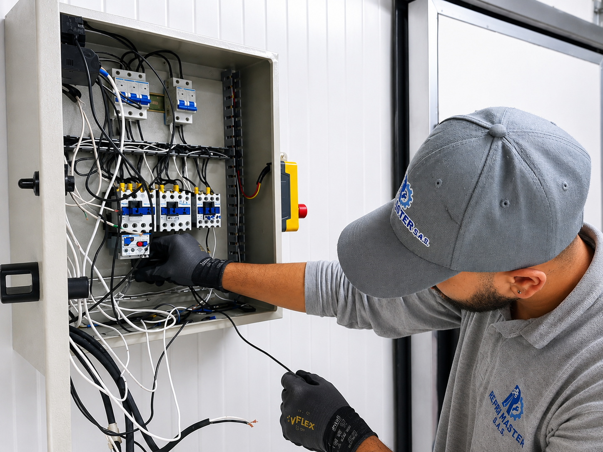
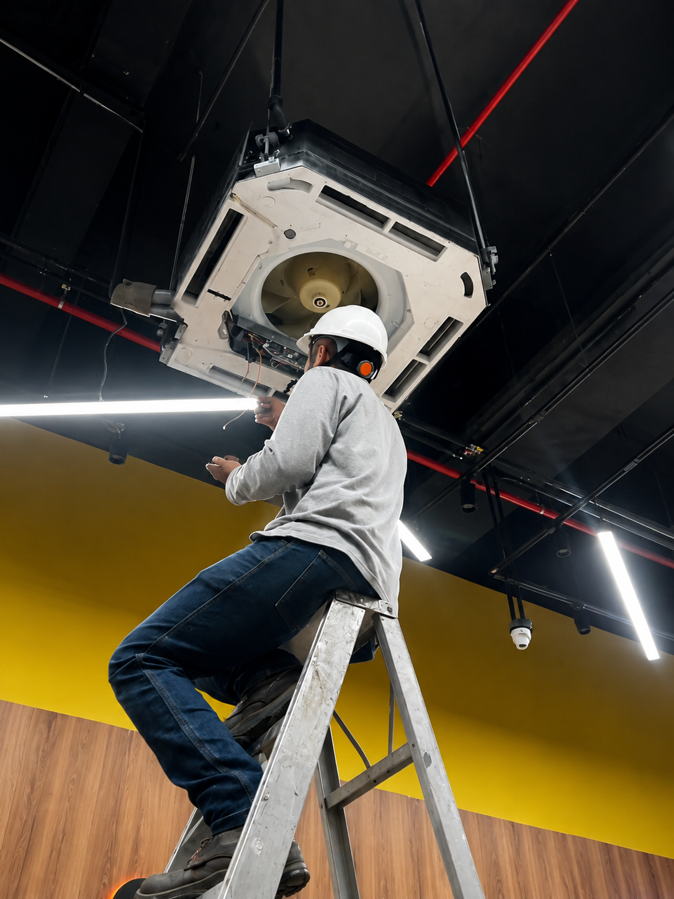
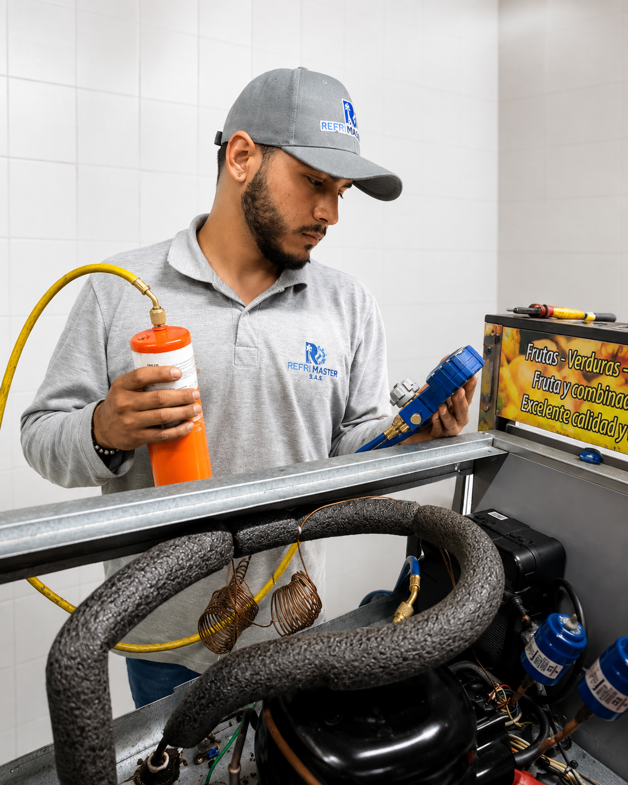

Somos una empresa especializada en soluciones integrales de refrigeración comercial e industrial, enfocada en el mantenimiento, diagnóstico, reparación, instalación y suministro de equipos y componentes. Trabajamos con criterios de calidad, seguridad y confiabilidad, brindando soluciones técnicas orientadas al correcto funcionamiento y óptimo rendimiento de los sistemas de refrigeración de nuestros clientes.
Brindar soluciones integrales en refrigeración y climatización, ofreciendo servicios de instalación, mantenimiento, diagnóstico y reparación de equipos y sistemas, con criterios de calidad, seguridad, eficiencia y confiabilidad.
Consolidarnos como una empresa reconocida en el sector de la refrigeración y climatización, destacándonos por la calidad de nuestros servicios, el compromiso con nuestros clientes y nuestra capacidad para ofrecer soluciones técnicas eficientes y confiables.

Realizamos mantenimiento, revisión y diagnóstico de sistemas de refrigeración para cuartos fríos, garantizando el correcto funcionamiento de los equipos y la conservación adecuada de los productos.

Realizamos adecuaciones eléctricas y de control en sistemas de refrigeración, interviniendo tableros, circuitos y componentes de mando para garantizar una operación segura, confiable y eficiente de los equipos.

Realizamos instalación, mantenimiento y reparación de sistemas de aire acondicionado, garantizando un funcionamiento eficiente, confiable y adecuado para cada espacio.

Realizamos mantenimiento, revisión y diagnóstico de equipos de refrigeración, verificando presiones, conexiones y componentes del sistema para detectar posibles fallas y garantizar un funcionamiento eficiente y confiable.
Calle 66A No. 44A-47
Barrio La Esmeralda
Itagüí - Antioquia
Instagram
@refrimasterssas
Facebook
Refri Master Sas